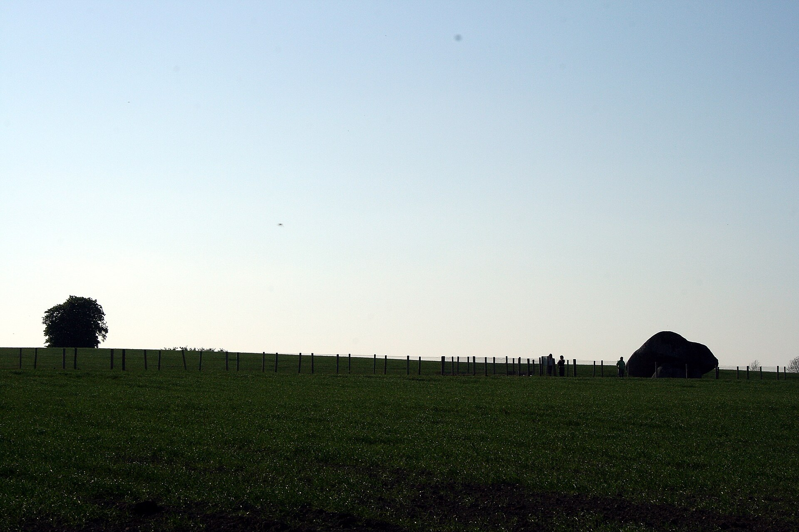

Learn · Carlow · 12 min · 4 August 2026
Top 20 Carlow influencers to watch in 2026.
Carlow creator guide
Who is shaping Carlow online in 2026?
The most visible Carlow influencers do not all look the same. One reaches 1.7 million people on TikTok. Another explains weather models to a national audience. Others make beauty videos, build communities around art, turn a pizza shop into local entertainment or show what modern farm-to-fork business looks like.
This guide brings those different forms of influence together. It includes individual creators, public figures with a strong digital presence and creator-led local accounts whose videos have travelled beyond a standard business audience.
It is an editorial list, not a paid placement. The order reflects a combination of verified Carlow connection, public reach, subject authority, originality, consistency and local relevance. Follower counts change constantly, so figures are included only when a dated public source supports them.

Brownshill Dolmen in County Carlow. Photo by Sarah777, public domain, via Wikimedia Commons.
How we researched it
What qualifies as a Carlow influencer?
For this list, a creator must be from County Carlow, based in the county or closely identified with a Carlow-based creator-led account. A large following helps, but it is not the only measure. A specialist creator can influence a valuable niche without having celebrity-scale numbers.
The research checked public creator profiles, official websites, established Irish media, local reporting and creator marketplaces. Some marketplace pages labelled as “Carlow” also displayed people based in Dublin, Cork and other counties; those entries were excluded unless another source established a genuine Carlow connection.
| Factor | What we looked for |
|---|---|
| Carlow connection | Born, raised or currently based in County Carlow, or the public face of a Carlow account |
| Audience | Public follower figures, reach signals or documented viral performance |
| Authority | Recognised knowledge or credibility within a clear field |
| Originality | A distinctive format, point of view or creative identity |
| Local relevance | Evidence that the account shapes conversation, culture or commerce in Carlow |
| Brand suitability | Clear subject area, consistent presentation and an identifiable audience |
The established voices
Carlow creators with major reach or authority
These five names have the strongest combination of public visibility, proven authority and identifiable Carlow connection. They are not directly comparable — their fields range from TikTok entertainment to weather and fine art — but each demonstrates how a focused subject can build influence far beyond the county.
| Rank | Creator | Profile | Main field | Main platform | Why they stand out |
|---|---|---|---|---|---|
| 1 | Lauren Whelan | TikTok profile | Beauty, lifestyle, comedy and daily vlogs | TikTok | The Carlow creator had 1.7 million TikTok followers in August 2025 and has built a full-time multi-platform career from short-form video. |
| 2 | Paddy Galloway | Official website | YouTube strategy and creator education | YouTube | The Carlow-born strategist says he has worked directly on videos with more than 10 billion views and helped over 100 channels. |
| 3 | Carlow Weather / Alan O'Reilly | X profile | Weather forecasting and public information | X, Facebook, Instagram and TikTok | A Carlow hobbyist turned national weather voice, followed by hundreds of thousands across several platforms. |
| 4 | Kathryn Thomas | Instagram profile | Broadcasting, wellness and lifestyle | Instagram, radio and television | The Carlow-born presenter combines long-standing mainstream recognition with wellness and lifestyle communication online. |
| 5 | Jess Kelly Art | Instagram profile | Fine art, interiors and creative business | The Carlow-based Irish-Mexican artist has built a recognisable metallic style and attracted celebrity and interior-design clients. |
What brands can learn from the top five
Each leading account owns a clear idea. Lauren Whelan offers an accessible, personality-led world. Paddy Galloway is associated with the mechanics of YouTube growth. Carlow Weather translates complex information into useful updates. Kathryn Thomas connects media authority with wellness, while Jess Kelly turns a recognisable visual style into a business.
The common lesson is simple: a creator becomes memorable when the audience can explain what they offer in one sentence.
Specialist creators
Beauty, UGC, pets, music and art
The next group shows the depth of the Carlow creator scene. These are specialist voices with a clear field and a public body of work. Some are growing personal audiences; others make user-generated content for brands or use social platforms to develop a creative career.
| Rank | Creator | Profile | Field | Best fit for |
|---|---|---|---|---|
| 6 | Farai Mahachi | Instagram profile | UGC, product demonstrations, testimonials and skits | Product launches, service explainers and relatable paid-social creative |
| 7 | Mariana Monteiro | Instagram profile | Beauty, skincare, fitness and healthy lifestyle | Beauty tutorials, wellness products, reviews and Reels-style UGC |
| 8 | Alex Fitzachary | TikTok profile | Beauty, fashion, outdoors and everyday lifestyle | Fashion, haircare, skincare, running and activity-led campaigns |
| 9 | Melissa Clarke | Creator profile | Makeup and fashion | Makeup artistry, beauty services and fashion-led collaborations |
| 10 | Max the Pomsky | Instagram profile | Pet lifestyle, events and pet-friendly places | Pet products, local experiences and pet-friendly hospitality |
| 11 | MACRUA | Official website | Original music, performance and songwriting | Music, live events, youth culture and creative collaborations |
| 12 | Ben Klarren | Instagram profile | House and techno music | Nightlife, festivals, music releases and event promotion |
| 13 | Siobhán Jordan | Official website | Visual art, education and nature-based creativity | Arts, education, family workshops and creative community projects |
| 14 | Hazel Scanlon | Official website | Contemporary and abstract art | Interiors, art collectors, exhibitions and creative process content |
Why niche influence matters
For a local or specialist campaign, audience relevance can matter more than raw follower count. A creator who regularly speaks about skincare, farming, contemporary art or electronic music already has the context a brand would otherwise need to manufacture.
That makes a smaller but well-defined audience useful for product demonstrations, local launches, event promotion and reusable UGC. The right question is not “Who has the biggest number?” but “Whose audience already cares about this subject?”
Creator-led local accounts
Carlow businesses making social content people choose to watch
The final six are businesses or community-facing accounts where content has become part of the attraction. Their strongest posts do more than announce opening hours or prices: they use a face, format or recurring point of view to earn attention.
| Rank | Creator-led account | Profile | Field | Main platform | Why it belongs on the list |
|---|---|---|---|---|---|
| 15 | Greg at Apache Carlow | TikTok profile | Food comedy and local culture | TikTok | Manager Greg turned the Carlow shop into a recurring comedy character and generated documented viral attention. |
| 16 | Aisling Lacey / Dame Ladies Fashion | Instagram profile | Fashion retail and small-business commentary | Instagram and TikTok | A recognisable owner-led voice mixing clothing content with direct discussion of the realities facing local retailers. |
| 17 | Ciara Stanley / Coppenagh House Farm | Instagram profile | Farm-to-fork food, farming and rural enterprise | Content connects the working farm, farm shop, café and local-produce story near Tullow. | |
| 18 | Magic Bubble Carlow | TikTok profile | Bubble tea, desserts and food content | TikTok | A local food account built around visual products, trends and frequent short-form publishing. |
| 19 | Talbot Hotel Carlow | Official website | Hospitality, staff comedy and destination content | TikTok and Instagram | Staff-led social content helped place the hotel among Irish businesses noted for letting younger teams shape the marketing voice. |
| 20 | Made in Carlow | Instagram profile | Local art, craft and maker discovery | Instagram and Facebook | The gallery gives more than 100 local and regional artists a shared discovery platform in Carlow town. |
The strongest local format is a recognisable human voice
The best-performing local accounts rarely feel like noticeboards. Apache Carlow has a recurring on-camera personality. Dame Ladies Fashion speaks through its owner. Coppenagh House Farm can show the people, animals, produce and place behind the product.
That human presence gives viewers a reason to return even when they are not ready to buy. It also creates a deeper library of content: opinions, behind-the-scenes moments, demonstrations, reactions, customer questions and recurring series.
Quick shortlist
Best Carlow influencers by field
| Field | First creators to review | Useful campaign formats |
|---|---|---|
| High-reach lifestyle | Lauren Whelan, Kathryn Thomas | Lifestyle integrations, event coverage, brand awareness |
| Creator education | Paddy Galloway | Expert interviews, YouTube strategy and creator-business content |
| Public information | Carlow Weather | Explainable data, seasonal campaigns and trusted updates |
| Beauty and fashion | Mariana Monteiro, Alex Fitzachary, Melissa Clarke, Dame Ladies Fashion | Tutorials, GRWM, reviews, try-ons and UGC ads |
| Art and interiors | Jess Kelly, Siobhán Jordan, Hazel Scanlon, Made in Carlow | Studio stories, process videos, exhibitions and product storytelling |
| Food and hospitality | Apache Carlow, Coppenagh House Farm, Magic Bubble, Talbot Hotel Carlow | Staff-led comedy, behind the scenes, product reveals and local guides |
| Music and nightlife | MACRUA, Ben Klarren | Performance clips, event trailers and release campaigns |
| Pets | Max the Pomsky | Product demos, pet-friendly guides and event content |
Before booking a collaboration
Check fit, not just followers
A public follower number is only the start of creator research. Ask for recent reach, average video views, audience location, age profile and examples of past commercial work. Confirm whether the price covers concept development, filming, editing, posting, paid usage and revisions.
For an Irish campaign, commercial content must be clearly identifiable as advertising. The creator and the brand should agree the disclosure, approval process and usage period before production begins.
Most importantly, review the creator's recent work. A strong partnership should feel believable in their normal feed. If the product requires the creator to become a completely different person, the audience will notice.
Research notes
Sources used for this guide
| Subject | Research source |
|---|---|
| Lauren Whelan | Irish Independent profile, August 2025 |
| Paddy Galloway | Official YouTube Channel Accelerator and The Irish Times profile |
| Carlow Weather | The Journal profile of Irish social-media forecasters |
| Kathryn Thomas | Irish Examiner profile, January 2026 |
| Jess Kelly | Irish Examiner profile and official website |
| Carlow UGC creators | Collabstr Carlow creator directory |
| Max the Pomsky | Carlow Nationalist, June 2026 |
| Music and visual artists | MACRUA official website, Ben Klarren on Breaking Tunes, Siobhán Jordan and Hazel Scanlon |
| Creator-led local businesses | Apache Carlow reporting, Dame Ladies Fashion reporting and Coppenagh House Farm |
| Local arts and hospitality | Made in Carlow and TikTok's official 2024 Irish trends report |
This guide was researched and checked on 4 August 2026. Social audiences and account activity can change after publication. Inclusion does not imply endorsement, and no creator paid to appear.